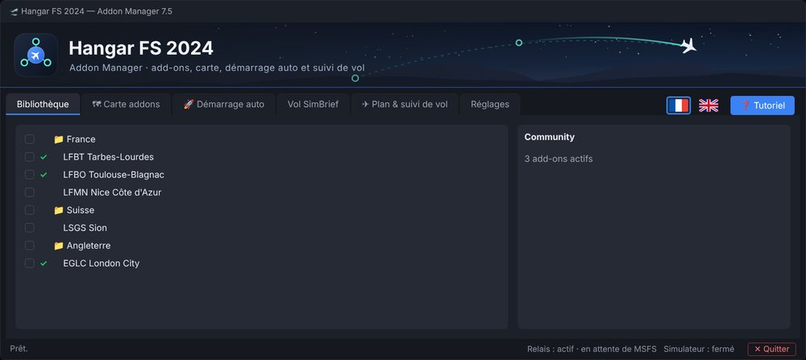
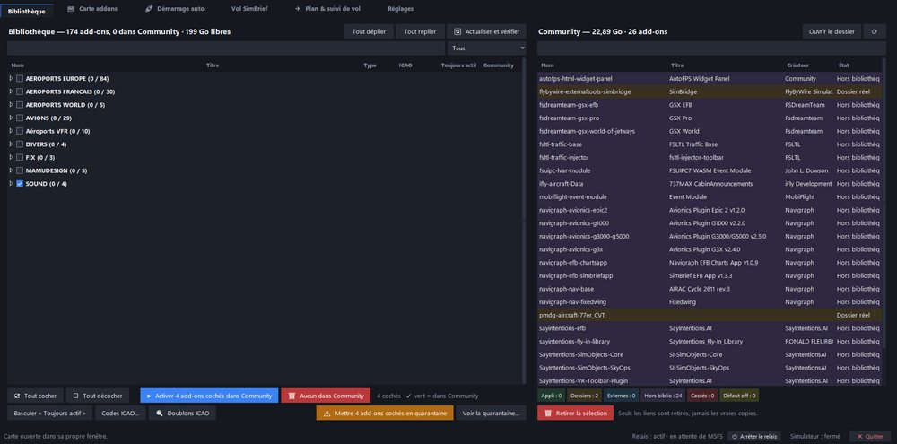
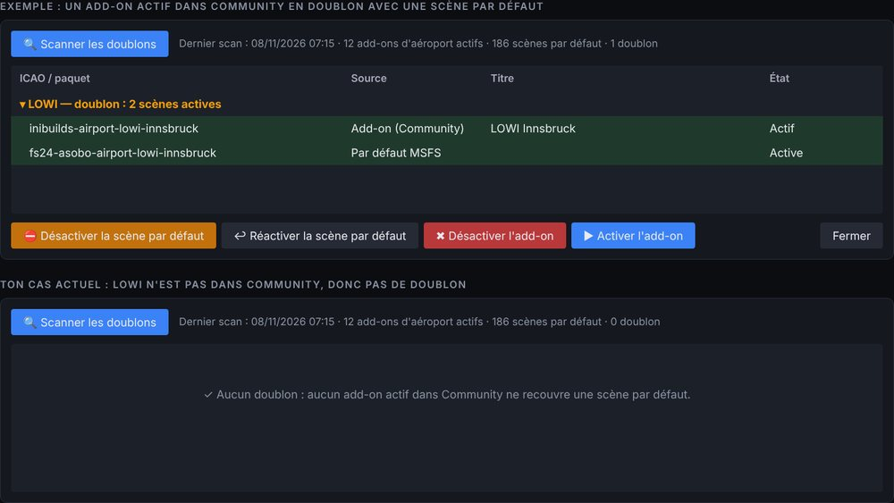
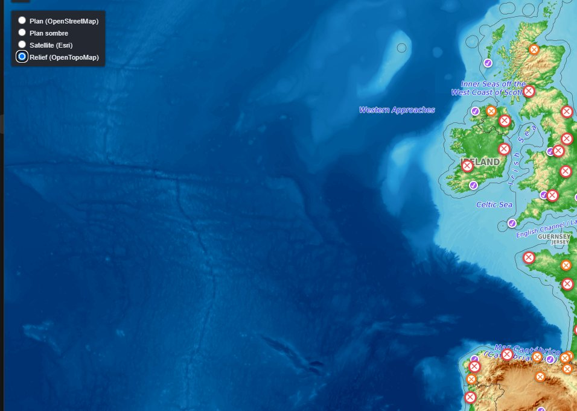
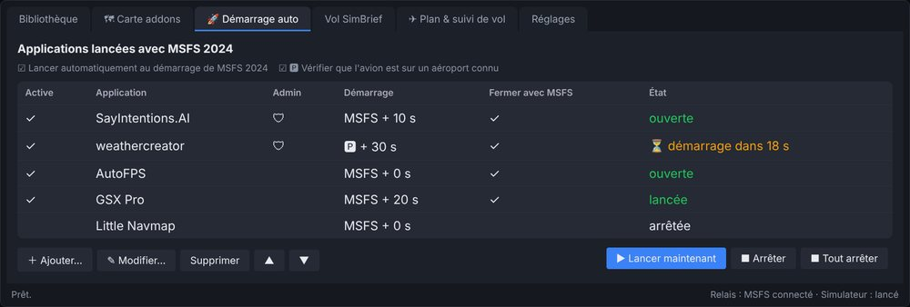
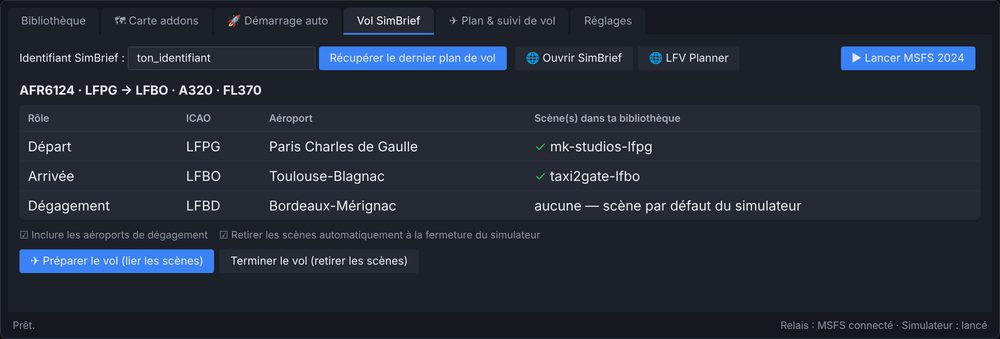
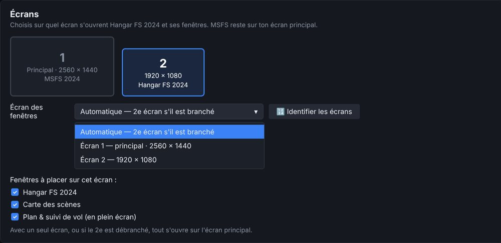

1. Présentation et premier lancement
Hangar FS 2024 (Addon Manager) gère tes add-ons MSFS 2024 sans jamais les copier : il crée de simples liens entre ta bibliothèque et le dossier Community, que tu ajoutes ou retires en un clic. Il regroupe aussi la carte de tes scènes, le lancement automatique de tes applis, le chargement des scènes de ton vol SimBrief et une page de plan et de suivi de vol.

Ce qu'il faut pour l'utiliser
- Windows 10 ou 11 : l'appli est un dossier prêt à l'emploi, rien d'autre à installer. Elle est écrite en C# et utilise des éléments déjà présents dans Windows (.NET Framework 4.8 et le moteur d'affichage WebView2 d'Edge). Le programme
Hangar FS 2024.exepasse sans alerte sur VirusTotal (0 détection, Microsoft Defender compris). - Un dossier « bibliothèque » où tu ranges tes add-ons, en dehors de Community (exemple :
D:\MSFS Addons), avec des sous-dossiers par catégorie si tu veux. - Facultatif : ton identifiant SimBrief et le code de ta VA FSHub. La page Plan de vol est intégrée à l'appli.
Premier lancement, en 4 étapes
- Décompresse le zip dans un dossier fixe (ex. Documents\Hangar FS 2024), puis double-clique sur
Hangar FS 2024.exe(si Windows affiche « Windows a protégé votre ordinateur » : Informations complémentaires puis Exécuter quand même ; c'est normal pour un programme récent, ce n'est pas une alerte virus). Pour avoir un raccourci « Hangar FS 2024 » sur le Bureau : Réglages > 🖥 Créer le raccourci sur le Bureau. Tes réglages d'une ancienne version (11.x) sont repris tels quels. Elle s'ouvre sur l'onglet Réglages. - Indique ta bibliothèque, puis clique sur Détecter pour le dossier Community et pour les scènes par défaut (StreamedPackages).
- Clique sur Enregistrer.
- MSFS fermé, déplace vers ta bibliothèque uniquement les add-ons que tu as installés toi-même (téléchargés puis dézippés dans Community). Hangar FS 2024 les remettra dans Community sous forme de liens quand tu les actives.
Quels dossiers déplacer, et lesquels laisser ? Ne vide surtout pas tout Community.
| Où | Quoi | Exemples |
|---|---|---|
| À déplacer vers la bibliothèque | Les add-ons dézippés à la main, marqués Dossier réel dans la liste Community (colonne État) | Scènes d'aéroport, packs VFR, décors, avions et livrées gratuits, sons, petits outils et widgets (flightsim.to…) |
| À laisser dans Community | Tout ce qu'un installateur ou un gestionnaire installe et met à jour lui-même : il ne le retrouverait plus | PMDG (Operations Center), GSX (FSDT), Navigraph (navdata), Orbx Central, iniBuilds Manager, Aerosoft One, FlyByWire Installer |
| À ne jamais toucher | Le contenu de MSFS et du Marketplace (il n'est pas dans Community) | Dossiers Official et StreamedPackages |
En cas de doute, laisse le dossier dans Community : il fonctionne normalement, il n'est simplement pas géré par l'appli. Les lignes marquées Lien sont déjà gérées par l'appli.
Règle d'or : l'appli se verrouille quand MSFS est ouvert (bandeau rouge en haut). MSFS ne lit Community qu'au démarrage, donc on prépare ses add-ons avant de lancer le simulateur.
Langue et tutoriel
- Les drapeaux 🇫🇷 et 🇬🇧, en haut à droite, changent la langue de l'appli. La langue active est encadrée en bleu ; l'appli propose de redémarrer pour appliquer le choix.
- Le bouton ❓ Tutoriel ouvre ce guide, même sans internet.
Les éléments toujours visibles
- Le menu à gauche : Bibliothèque, Carte addons, Démarrage auto, Vol SimBrief, Plan & suivi de vol, Réglages (la petite flèche ↗ signale une page qui s'ouvre dans sa propre fenêtre).
- En bas du menu : l'état du relais (point vert = MSFS connecté, orange = en attente, gris = arrêté) avec le bouton ⏻ pour l'arrêter ou le relancer, l'état du simulateur et le bouton rouge ✕ Quitter.
- Le bouton « Réduire le menu replie le menu en une fine colonne d'icônes, pour laisser plus de place aux listes ; » le redéplie. Ton choix est gardé.
- En haut à droite : les drapeaux de langue et le bouton Tutoriel. En bas de la fenêtre : la ligne des messages.
2. Bibliothèque et panneau Community
L'onglet Bibliothèque montre à gauche tous tes add-ons rangés par dossier, et à droite ce qui est réellement dans Community ; tu actives et retires depuis la gauche, rien n'est jamais supprimé de ta bibliothèque.

Les chiffres en haut : add-ons dans Community, scènes d'aéroport reconnues, dossiers réels (add-ons copiés directement dans Community) et liens cassés (en rouge s'il y en a).
Lire la liste de gauche
- Chaque dossier indique combien de ses add-ons sont dans Community, par exemple « AEROPORTS FRANCAIS (3 / 30) ».
- Une coche verte ✓ dans la colonne Community = l'add-on est dans Community.
- Quand tu sélectionnes un add-on déjà dans Community (pour le retirer), sa coche disparaît : la case devient vide, bordée de bleu. Elle montre ce qui restera après « Retirer de Community ».
- La colonne Version montre la version installée de chaque add-on, telle que son créateur l'a indiquée (fichier manifest.json). Pour savoir s'il en existe une plus récente, compare-la avec la page de l'add-on (flightsim.to…). Vide = le créateur n'a pas indiqué de version.
- La zone de recherche et le filtre (Tous, actifs, scènes…) réduisent la liste (la croix ✕ au bout du champ, ou la touche Échap, efface la recherche) ; Tout déplier et Tout replier ouvrent ou ferment les dossiers.
- Fenêtre réduite ou petit écran : les rangées de boutons passent sur deux lignes, aucun bouton n'est coupé.
- Les petites fenêtres (Doublons ICAO, Quarantaine, Modifier une appli…) s'ouvrent sur l'écran de l'appli, puis se rouvrent là où tu les as laissées. Si cet écran est débranché, elles reviennent sur celui de l'appli.
Choisir des add-ons : deux façons
- Cocher les cases : la case d'un dossier coche tous ses add-ons. Cocher ne fait rien tout seul, c'est seulement une sélection.
- Ctrl + clic gauche sur des lignes : elles se surlignent. Les boutons d'action utilisent d'abord ces lignes surlignées, puis les cases cochées. C'est la façon la plus sûre pour retirer quelques scènes précises. Après Activer, Retirer ou Préparer le vol, la sélection se vide toute seule.
Les boutons d'action (en bas)
| Bouton | Ce qu'il fait |
|---|---|
| Tout cocher / Tout décocher | Coche ou décoche toute la bibliothèque |
| ▶ Activer … dans Community | Crée les liens dans Community ; une ligne de progression s'affiche pendant l'installation |
| Retirer … de Community | Retire seulement les liens ; tes fichiers restent dans la bibliothèque |
| ↶ Annuler | Défait la dernière action Activer ou Retirer, protection ★ comprise. Si tu retires plus de 20 add-ons d'un coup, une seconde confirmation est demandée |
| ★ Protéger | Protège les add-ons sélectionnés : ils sont activés, une ★ blanche s'affiche dans la colonne Protégé, et un vol SimBrief ne les retire ni ne les met jamais de côté |
| ☆ Ne plus protéger | Enlève seulement l'étoile : l'add-on reste dans Community, actif comme les autres (un vol SimBrief peut alors le mettre de côté). Pour le désactiver, utilise Retirer de Community. Après ★ ou ☆, les add-ons sont décochés tout seuls : leur case redevient verte |
| 📋 Profils… | Enregistre ta sélection sous un nom (ex. « VFR et liners ») et l'active en un clic (voir plus bas) |
| Codes ICAO… | Corrige les codes OACI d'une scène mal reconnue |
| Doublons ICAO | Compare tes add-ons actifs aux scènes par défaut de MSFS (voir plus bas) |
| Mettre en quarantaine (à droite) | Met de côté un add-on qui pose problème, sans le supprimer |
| Voir la quarantaine… | Liste les add-ons mis de côté et permet de les restaurer à leur place d'origine |
La quarantaine est volontairement à l'écart des boutons Activer et Retirer pour éviter les erreurs de clic.
Le panneau Community (à droite)
- Il liste tout ce qui est dans Community (nom, titre, créateur, version installée, état), avec la taille totale, et des pastilles de catégorie : Appli, Dossiers réels, Externes, Hors bibliothèque, Cassés, Défaut off.
- Clic droit sur une ligne : propriétés, ouvrir le dossier, déplacer vers la bibliothèque, retirer le lien.
- Retirer la sélection enlève seulement les liens, jamais les vraies copies.
- Le bouton ⟳ relit Community et régénère le fichier layout.json si besoin.
Réparer un add-on manquant
Si tu déplaces ou supprimes un dossier en dehors de l'appli, un bandeau orange « Voir et réparer » apparaît. Clique dessus : l'appli retrouve l'add-on déplacé ou retire le lien cassé.
Profils (un ensemble d'add-ons en un clic)
Un profil retient une sélection d'add-ons sous un nom, par exemple « VFR et liners » (LFBO, LFDT, Baron 58, Boeing 737) ou « Aéroports français ».
- Dans la Bibliothèque, sélectionne les add-ons (cases ou Ctrl + clic). Un dossier entièrement coché est gardé comme dossier : ce que tu y ajouteras plus tard fera aussi partie du profil.
- Clique sur 📋 Profils… puis Enregistrer la sélection comme profil… et donne un nom.
- Pour chaque profil, choisis ce qu'il remplace, en cliquant sur une des tuiles à droite de la liste : Seulement les scènes d'aéroport (les autres scènes sont retirées ; avions, outils, librairies, décors et sons restent comme ils sont) ou Tout (seuls les add-ons du profil restent dans Community, avions compris).
- Les add-ons ★ protégés restent toujours chargés, sauf si tu allumes la tuile Ne pas tenir compte des add-ons ★ protégés : ceux qui ne sont pas dans le profil sont alors retirés, mais gardent leur étoile. ★ Remettre les protégés les remet.
- ▶ Activer le profil (simulateur fermé) montre d'abord ce qui sera activé et retiré. Rien n'est supprimé, seuls des liens changent, et ↶ Annuler remet Community exactement comme avant.
Si un vol SimBrief est préparé, termine-le avant d'activer un profil.
Doublons ICAO (scènes en double)

- Clique sur Doublons ICAO, puis sur Scanner les doublons. La barre Rechercher un code OACI ou une scène… filtre la liste ; la croix ✕ ou Échap l'efface.
- Seuls les add-ons présents dans Community sont comparés aux aéroports par défaut de MSFS 2024.
- Pour chaque doublon, tu choisis : désactiver la scène par défaut, ou désactiver l'add-on.
- Une scène par défaut désactivée reste toujours listée dans cette fenêtre, pour la réactiver plus tard avec « ↩ Réactiver la scène par défaut ».
Une scène add-on bien faite masque déjà l'aéroport par défaut : ne désactive le défaut qu'en cas de bâtiments en double ou d'artefacts.
Désactiver la scène par défaut la coupe de deux façons : un dossier vide à son nom dans Community, et la scène désactivée dans My Library de MSFS. Pour cela, l'appli change uniquement la ligne de cette scène dans le fichier Content.xml de MSFS 2024 ; elle ne supprime rien et ne touche à aucun autre contenu. Réactiver fait l'inverse. Tout se fait simulateur fermé.
- Sauvegarde initiale, une seule fois : avant la première modification, une fenêtre explique ce qui va être modifié, montre où se trouve le fichier et propose Sauvegarder et continuer. La copie va sur ton Bureau, dans fs_2024_xml_backup, sous le nom Content.xml (comme l'original) ; Changer l'emplacement… permet d'en choisir un autre. Elle n'est jamais écrasée et, tant qu'elle existe, l'appli ne redemande rien, ni pour désactiver ni pour réactiver.
- Filet de sécurité : l'appli garde aussi les 2 dernières copies automatiques à côté du fichier ; les plus anciennes sont supprimées toutes seules. Aucune copie n'est remise en place automatiquement.
- En cas de souci : bouton Restaurer Content.xml… de la fenêtre Doublons ICAO ; la sauvegarde initiale est proposée en premier. Tu choisis, tu confirmes (MSFS fermé), et le fichier actuel est d'abord copié pour pouvoir revenir en arrière.
- Scène déjà désactivée avant cette version : sélectionne-la et clique de nouveau sur Désactiver la scène par défaut pour la désactiver aussi dans My Library.
Packs de plusieurs aérodromes (ex. France VFR) : un code égaré dans un fichier du pack, loin de sa région (ex. KXNO aux États-Unis dans un pack français) ou inconnu (ex. AGRI), n'est plus pris pour un aéroport. Il ne crée donc plus de faux doublon entre deux packs.
3. Carte addons
La carte des scènes place sur une carte du monde toutes tes scènes d'aéroport et les aéroports par défaut de MSFS 2024, avec une couleur par taille et un symbole pour dire si chacune est active.

Ouvrir la carte : clique sur l'onglet 🗺 Carte addons. Elle s'ouvre dans sa propre fenêtre (repère vert dans la barre des tâches), et l'appli revient sur l'onglet où tu étais. Si la carte est déjà ouverte, elle est simplement ramenée au premier plan.
Lire la carte
- Couleur = type de scène : grand aéroport, aéroport moyen, petit aérodrome, VFR / ULM, scène par défaut de MSFS. La légende du panneau de droite donne chaque couleur et permet de masquer un type.
- Pastille pleine avec ✓ = scène active (dans Community, ou scène par défaut active).
- Pastille blanche avec ✕ = scène inactive.
- Daltoniens : allume la tuile « Mode daltonien » dans Réglages. Les couleurs changent pour une palette lisible, chaque pastille porte une lettre (G gros, M moyen, P petit, V VFR) et les scènes par défaut deviennent des losanges. Le trafic IA de Plan & suivi de vol suit la même palette. Dans la Bibliothèque, la case d'un add-on présent dans Community devient bleu ciel, sur une ligne bleu foncé (jaune = simplement cochée) et les lignes de Community passent en bleu (liens) et orange (vrais dossiers).
- Ton plan SimBrief s'affiche en bleu s'il est chargé.
- Un clic sur une pastille affiche la scène : nom, dossier, état, et s'il existe aussi une scène par défaut ou un add-on pour le même aéroport.
Le panneau de droite
- Chaque ligne de la légende est un interrupteur : un clic masque ce type de scène sur la carte (la ligne s'éteint et affiche « OFF »), un autre clic le réaffiche (« ON »). Le chiffre donne le nombre de scènes.
- Le bouton » en haut du panneau le masque pour agrandir la carte ; le bouton « Légende et réglages, en haut à droite de la carte, le fait revenir. Ton choix est gardé.
- Recherche : tape un code OACI ou un nom puis Entrée pour zoomer dessus.
- Affichage : plan de vol, codes OACI, taille des pastilles, luminosité du fond.
- Fond de carte (icône des calques) : Plan OpenStreetMap, Plan sombre, Satellite, Relief.
- ⟳ Actualiser et Tout voir ; ✕ Fermer la carte ferme la fenêtre.
La carte suit l'appli en direct : quand tu actives ou retires une scène dans la Bibliothèque, sa pastille change sans recharger. Elle se ferme aussi toute seule quand tu quittes Hangar FS 2024.
4. Démarrage auto
Le démarrage auto lance tes applis de vol (SayIntentions, weathercreator, GSX, AutoFPS…) tout seul quand MSFS démarre ou quand ton avion est au parking, puis les ferme quand tu quittes MSFS. Hangar FS 2024 doit être ouvert pour que ça fonctionne.

Ajouter une application
- Onglet 🚀 Démarrage auto, bouton ＋ Ajouter… (ou ✎ Modifier… pour une appli déjà listée).
- Programme : clique sur Parcourir et choisis le fichier .exe (ou .bat, .lnk).
- Programme à fermer : le ou les programmes qui tournent vraiment, séparés par « ; ». Si le programme lancé n'est qu'un lanceur ou un « Updater », lance l'appli une fois puis clique sur Choisir… pour la sélectionner dans la liste des programmes ouverts.
- Règle le démarrage et les options : chaque choix est une tuile ; un clic l'allume (voyant allumé et « ON ») ou l'éteint (tableau ci-dessous). Puis Enregistrer.
| Réglage | À quoi il sert |
|---|---|
| Au démarrage de MSFS 2024 | L'appli se lance dès que MSFS démarre |
| 🅿 Quand l'avion est au parking | L'appli attend que ton vol soit chargé et l'avion immobile au sol |
| Délai | Secondes d'attente après le déclencheur, réglable par appli |
| Fermer avec MSFS 2024 | Ferme l'appli quand tu quittes le simulateur |
| Active | Éteins cette tuile pour garder l'appli dans la liste sans la lancer |
| 🛡 Mode administrateur | Pour les applis qui l'exigent, comme SayIntentions ou weathercreator |
| Écran d'affichage | Ne pas déplacer, Automatique (2e écran) ou un écran précis ; bouton Identifier |
Le 🅿 (parking) : l'appli se lance quand ton vol est chargé et que l'avion est immobile au sol, puis après son délai (« 🅿 Parking + 30 s »).
La tuile « Vérifier que l'avion est sur un aéroport connu (🅿) » ajoute une condition à ce mode : l'avion doit aussi être sur un aéroport. Sans elle, une appli 🅿 peut se lancer trop tôt, au menu ou dans le hangar (c'est le cas de weathercreator) : garde-la cochée. Elle ne change rien aux applis réglées sur « MSFS + délai ». Une bulle d'aide le rappelle au survol du 🅿 et de la tuile.
Pendant le vol
- La liste montre l'état de chaque appli : programmée (avec le compte à rebours), lancée, ouverte ou arrêtée.
- ▶ Lancer maintenant et ■ Arrêter agissent tout de suite sur l'appli sélectionnée, utile si une appli plante ; ■ Tout arrêter coupe toutes les applis lancées.
- ▲ et ▼ changent l'ordre de la liste.
Mode administrateur et 2e écran : une appli lancée en administrateur ne s'ouvre sans confirmation, et ne peut être déplacée sur un autre écran, que si Hangar FS 2024 tourne lui-même en administrateur (voir Réglages).
Fenêtres Windows (UAC) à la fermeture : Windows interdit à un programme normal de fermer un programme administrateur sans autorisation. Si Hangar FS 2024 tourne en mode normal, les applis 🛡 (SayIntentions, weathercreator…) sont fermées ensemble avec une seule confirmation. Pour n'en avoir aucune, fais tourner Hangar FS 2024 en administrateur : coche « Toujours ouvrir Hangar FS 2024 en mode administrateur » dans Réglages. L'appli te le propose au démarrage, avec le bouton Relancer en administrateur.
5. Vol SimBrief
L'onglet Vol SimBrief lit ton dernier plan SimBrief et n'active que les scènes des aéroports de ce vol ; elles sont retirées automatiquement quand tu fermes MSFS.

Déroulé type d'un vol
- Prépare ton vol sur SimBrief : bouton 🌐 Ouvrir SimBrief.
- Dans Hangar FS 2024, saisis ton Identifiant SimBrief (la première fois) et clique sur Récupérer le dernier plan de vol.
- L'appli affiche le départ et l'arrivée en grand, comme sur un billet, puis la route et les aéroports trouvés (départ, arrivée et, si la tuile « Inclure les aéroports de dégagement » est allumée, les dégagements), avec les scènes correspondantes de ta bibliothèque.
- Clique sur ✈ Préparer le vol (lier les scènes) : seules ces scènes sont liées dans Community.
- Clique sur ▶ Lancer MSFS 2024. Ce bouton n'existe que dans cet onglet, pour lancer le simulateur une fois les scènes prêtes.
- À la fermeture de MSFS, les scènes du vol sont retirées de Community si la tuile « Retirer les scènes automatiquement à la fermeture du simulateur » est allumée, et le plan est effacé. Les add-ons ★ protégés ne sont jamais retirés.
Bon à savoir
- Les options du vol sont des tuiles : un clic l'allume (voyant et « ON ») ou l'éteint. Un bandeau vert sous les boutons rappelle le vol en cours.
- ■ Terminer le vol (retirer les scènes), le bouton orange, retire le vol en cours sans attendre la fermeture de MSFS.
- Plusieurs scènes pour un même aéroport : « Préparer le vol » te demande laquelle activer (ton dernier choix est proposé par défaut). Les autres sont mises de côté pendant le vol si elles étaient actives, puis remises à la fin.
- Garder certaines scènes pendant tous les vols : protège-les avec ★ Protéger (bouton en bas de la Bibliothèque, ou clic droit sur la ligne). ☆ Ne plus protéger enlève l'étoile sans les retirer de Community. Elles ne sont jamais retirées ni mises de côté par un vol SimBrief.
- Ne charger que les scènes du vol : tuile allumée, « Préparer le vol » met de côté les autres scènes d'aéroport activées dans la Bibliothèque, puis les remet à la fin du vol. Les add-ons ★ protégés, avions, outils et librairies ne sont jamais touchés.
- Une scène non reconnue ? Corrige ses codes avec Codes ICAO… dans la Bibliothèque.
- « Arrêter le relais à la fermeture du simulateur » coupe le relais quand MSFS se ferme ; il redémarre avec lui.
6. Plan & suivi de vol
Plan & suivi de vol ouvre la page Plan de vol (intégrée à l'appli) dans sa propre fenêtre, en plein écran, avec en plus le suivi de ton vol en direct, le trafic IA de MSFS et les pilotes de ta VA FSHub en ligne.
Ouvrir et fermer : onglet ✈ Plan & suivi de vol (repère orange dans la barre des tâches). Le bouton rouge ✕ FERMER, en haut à droite de la page, ferme la fenêtre. Les liens externes (SimBrief, FSHub, radars) s'ouvrent dans ton navigateur habituel.
La page reprend les couleurs de l'appli : cartes sombres, titres et bouton principal en bleu ciel, boutons arrondis.
La page principale
- Deux colonnes : à gauche le FMS, à droite les destinations. Sous les trois étapes, le bouton 🗺 Choisir départ et arrivée sur la carte ouvre la carte Plan de vol personnel.
- FMS : en haut, le mode (Départ → Arrivée ou Aléatoire / durée), puis trois étapes numérotées : 1 l'avion, 2 le départ, 3 l'arrivée (ou la durée du vol en aléatoire). Le bouton allumé est celui qui est choisi.
- Options (repliées, un clic pour les ouvrir) : Départs / Arrivées, IFR / VFR, le Moment du vol et l'altitude de croisière. Fermées, elles affichent le résumé de tes choix, par exemple « IFR · FL370 · moment libre ». Les heures du moment restent visibles juste en dessous.
- Moment du vol : Libre, Matin, Journée, Crépuscule ou Nuit. En Départ → Arrivée, l'appli affiche en UTC l'heure à régler dans MSFS, 30 min avant le décollage pour te préparer (1 h pour un gros porteur ou un vol de plus de 4 h), puis le décollage et l'arrivée avec la lumière qu'il fera sur place ; l'heure est calculée pour que le moment colle aux deux aéroports (Crépuscule : décollage de jour, atterrissage juste après le coucher du soleil) et elle est envoyée à SimBrief. Elle affiche aussi s'il fait jour ou nuit en ce moment à tes deux aéroports. En Aléatoire / durée, c'est un départ maintenant depuis l'aéroport que tu as choisi (il ne change jamais) : l'appli ne propose que les destinations où ce sera le bon moment à l'atterrissage.
- Destinations : elles correspondent à l'avion choisi (vrais aéroports avec une piste adaptée pour un avion de ligne, grands aéroports pour un gros porteur), avec la compatibilité des pistes : longueur, mais aussi largeur (un avion de ligne est refusé sous 30 m, « à vérifier » sous 45 m ; 45 m pour un gros porteur) et infrastructures (un terrain sans vols commerciaux réguliers, petit aérodrome ou base militaire, est marqué « à vérifier » pour un avion de ligne, cause 🏢 Infrastructures).
- Frise jour / nuit : sous le temps de vol, une barre montre si tu voles de jour (jaune), à l'aube ou au crépuscule (orange) ou de nuit (bleu), avec l'heure locale de décollage et d'atterrissage de chaque aéroport et l'heure UTC. Le calcul suit la position de l'avion selon sa vitesse et le déplacement du soleil, vu de l'altitude de croisière (en altitude, on voit le soleil plus longtemps qu'au sol) ; elle annonce aussi un lever ou coucher du soleil en route. Si la base ne connaît pas les pistes d'un aérodrome, il est marqué « à vérifier » (orange) au lieu d'être refusé.
- Destination choisie : un clic sur une destination affiche sous la liste l'aperçu du trajet sur une petite carte, la distance, le temps de vol (du décollage à l'atterrissage, montée et descente comprises, sans le roulage) avec en dessous le temps bloc estimé « porte à porte » (temps de vol + roulage type : 10 min en avion léger, 20 min en turbopropulseur ou en jet, 30 min en gros porteur ; chaque destination de la liste l'affiche aussi), et le cadre Export, avec deux boutons séparés : SimBrief et Fichier .PLN (un clic sur SimBrief ne télécharge pas de .PLN). Tant qu'aucune destination n'est choisie, une petite phrase les remplace.
La carte Plan de vol personnel (bouton 🗺 Choisir départ et arrivée sur la carte de la page Plan de vol) : la carte plein écran où tu cliques un départ puis une arrivée. Elle s'ouvre toujours vide, sans aucun aéroport choisi, pour être totalement libre, et affiche en direct la zone où il fait nuit (voile bleu nuit, aube et crépuscule en dégradé, ligne orange du lever / coucher du soleil, heure UTC en bas à gauche). La barre du haut est rangée sur deux lignes. En haut : Menu principal, le résumé de la route (départ → arrivée, distance, compatibilité), Inverser, Effacer, Valider et la croix pour fermer. En bas : Je clique pour (tuiles ▲ Départ et ■ Arrivée : choisis ce que fera ton prochain clic ; sans choix, le 1er clic donne le départ et le 2e l'arrivée), les filtres d'aéroports (Gros, Moyens ; seuls les terrains avec un vrai code OACI à 4 lettres sont affichés, et leur code s'affiche quand tu zoomes ; les petits aérodromes sont dans la page Plan VFR), l'avion, l'altitude et Fond sombre. Le bouton Fond de carte change le fond (Plan, Plan sombre, Satellite, Relief). Une légende, en bas à droite, rappelle les couleurs et se replie d'un clic sur son titre. Les cercles gris au contour rouge en pointillés sont les aéroports incompatibles avec ton avion (trop loin ou piste inadaptée). Une fois le départ et l'arrivée choisis, la légende montre aussi la frise jour / nuit du vol (voir Plan de vol).
Plan VFR (entrée Plan VFR du menu, rubrique Préparer) : une page pour tracer ton vol à ta façon, comme sur une carte VFR. Clique n'importe où sur la carte pour ajouter un point, ou sur un aéroport, un VOR / DME ou un NDB (le point prend alors son nom, par exemple TOU ; un point libre s'appelle WP1, WP2…). Glisse un point pour le déplacer ; pour le retirer, ✕ dans la liste de droite, ou clic droit dessus puis Retirer de la route. Chaque branche affiche son cap magnétique (déclinaison de la balise la plus proche) et sa distance, et la colonne de droite liste tes points (cap et distance pour y aller) avec la distance totale. Les VOR / DME sont des hexagones blancs bordés de bleu marine (différents des aéroports) et les NDB des ronds violets ; si tu as importé les données de navigation de MSFS, les NDB viennent de là. Les petits aérodromes apparaissent dès un zoom moyen (inutile de zoomer très serré). Les boutons Aéroports, VOR / DME, NDB, Axes de piste (axe prolongé de 5 NM en pointillés jaunes en zoomant) et Noms s'allument ou s'éteignent, et Fond de carte change le fond : Relief (relief en couleurs, OpenTopoMap), Topo, Plan, Plan sombre ou Satellite. Pas d'altitude ni de carburant à régler. Le choix Avion (monomoteurs, bimoteurs, turbopropulseurs légers, ou n'importe quel code OACI tapé à la main, par exemple C414) sert pour SimBrief et pour le temps de vol : à côté du nom de l'avion, sa vitesse de croisière en nœuds (valeur de croisière normale à basse altitude, par exemple 115 kt pour un C172, 195 kt pour un C414). Change-la si tu voles plus vite ou plus lentement : elle est gardée pour cet avion. La liste de droite affiche alors le temps de chaque branche et le temps de vol total (du décollage à l'atterrissage : les branches plus 5 min de tour de piste au départ et à l'arrivée, sans le vent), et en dessous le temps bloc estimé « porte à porte » (+10 min de roulage). Mes routes (colonne de droite) : donne un nom à ta route puis 💾 Enregistrer ; la liste en dessous permet de la rouvrir (Ouvrir) ou de la supprimer (✕). Elles sont gardées dans le dossier des réglages de l'appli et restent après une mise à jour. 📂 Ouvrir un .PLN (barre du haut) reprend un plan existant (le tien, celui de Little Navmap ou de la carte du monde de MSFS) pour le modifier : les SID, STAR et approches du fichier reviennent comme de simples points, à rechoisir dans la fiche de l'aéroport si tu veux. Commence et termine sur un aéroport, puis SimBrief (route point par point, règles VFR) ou Fichier .PLN à charger dans MSFS 2024. Ta route est gardée quand tu fermes la page. Données : OurAirports ; fond Relief : © OpenStreetMap, OpenTopoMap.
RNAV, ILS, SID, STAR et approches (page Plan VFR) : en bas de la colonne de droite, Importer depuis MSFS. À faire une seule fois, MSFS 2024 ouvert au menu principal : l'appli lit dans ton simulateur les points RNAV, les VOR, les ILS, les NDB, les départs (SID), les arrivées (STAR) et les approches de tous les aéroports du monde (add-ons compris) et les garde sur ton PC ; une barre montre l'avancement, compte quelques minutes. Ensuite, tout marche simulateur éteint. Les boutons RNAV (petits triangles bleus, en zoomant) et ILS (cône vert dans l'axe d'approche, avec fréquence et cap) s'allument, et tu peux cliquer dessus pour en faire un point de ta route. Clic droit sur un aéroport (ou sur son ILS) ouvre sa fiche : pistes, ILS (fréquence et cap), Départs (SID), Arrivées (STAR) et Approches. À l'ouverture, la carte se centre sur l'aéroport et dessine toutes ses procédures, avec leur nom au bout (cases « voir sur la carte » pour en masquer) : tu vois d'un coup d'œil vers où part chaque SID et d'où arrive chaque STAR. Clique une procédure pour la mettre en avant, choisis sa piste et sa transition, puis Choisir : le SID s'ajoute après ton aéroport de départ (orange), la STAR (bleu) et l'approche (vert) avant ton aéroport d'arrivée, dans la liste, la distance et le fichier .PLN. La fiche permet aussi de mettre un aéroport en départ ou en arrivée. Le clic droit sur un point de ta route ou une balise ouvre sa fiche (Retirer, Ajouter à la route). SimBrief reçoit ta route avec le SID, la STAR et les pistes de départ et d'arrivée. Les VOR et NDB de ta route lui sont envoyés par leurs coordonnées (sinon SimBrief pourrait choisir une balise du même nom ailleurs dans le monde, par exemple TAN pris pour Tanger) ; les points officiels à 5 lettres sans chiffre (ex. OSVEG), uniques au monde, partent par leur nom, plus précis. Si tu as choisi une approche, il reçoit la piste d'arrivée mais pas les points de l'approche : SimBrief et Navigraph relient ton dernier point au début de l'approche et l'ajoutent eux-mêmes (sur la carte SimBrief, le trait va tout droit vers la piste, c'est normal ; dans Navigraph, vérifie que l'approche et sa transition sont bien celles que tu as choisies). Refais l'import (Mettre à jour depuis MSFS) après une grosse mise à jour du simulateur.
Plan VFR (entrée Plan VFR du menu, rubrique Préparer) : une page pour tracer ton vol à ta façon, comme sur une carte VFR. Clique n'importe où sur la carte pour ajouter un point, ou sur un aéroport, un VOR / DME ou un NDB (le point prend alors son nom, par exemple TOU ; un point libre s'appelle WP1, WP2…). Glisse un point pour le déplacer ; pour le retirer, ✕ dans la liste de droite, ou clic droit dessus puis Retirer de la route. Chaque branche affiche son cap magnétique (déclinaison de la balise la plus proche) et sa distance, et la colonne de droite liste tes points (cap et distance pour y aller) avec la distance totale. Les VOR / DME sont des hexagones blancs bordés de bleu marine (différents des aéroports) et les NDB des ronds violets ; si tu as importé les données de navigation de MSFS, les NDB viennent de là. Les petits aérodromes apparaissent dès un zoom moyen (inutile de zoomer très serré). Les boutons Aéroports, VOR / DME, NDB, Axes de piste (axe prolongé de 5 NM en pointillés jaunes en zoomant) et Noms s'allument ou s'éteignent, et Fond de carte change le fond : Relief (relief en couleurs, OpenTopoMap), Topo, Plan, Plan sombre ou Satellite. Pas d'altitude ni de carburant à régler. Le choix Avion (monomoteurs, bimoteurs, turbopropulseurs légers, ou n'importe quel code OACI tapé à la main, par exemple C414) sert seulement pour SimBrief. Commence et termine sur un aéroport, puis SimBrief (route point par point, règles VFR) ou Fichier .PLN à charger dans MSFS 2024. Ta route est gardée quand tu fermes la page. Données : OurAirports ; fond Relief : © OpenStreetMap, OpenTopoMap.
Plan VFR (entrée Plan VFR du menu, rubrique Préparer) : une page pour tracer ton vol à ta façon, comme sur une carte VFR. Clique n'importe où sur la carte pour ajouter un point, ou sur un aéroport, un VOR / DME ou un NDB (le point prend alors son nom, par exemple TOU ; un point libre s'appelle WP1, WP2…). Glisse un point pour le déplacer ; pour le retirer, ✕ dans la liste de droite, ou clic droit dessus puis Retirer de la route. Chaque branche affiche son cap magnétique (déclinaison de la balise la plus proche) et sa distance, et la colonne de droite liste tes points (cap et distance pour y aller) avec la distance totale. Les VOR / DME sont des hexagones blancs bordés de bleu marine (différents des aéroports) et les NDB des ronds violets ; si tu as importé les données de navigation de MSFS, les NDB viennent de là. Les petits aérodromes apparaissent dès un zoom moyen (inutile de zoomer très serré). Les boutons Aéroports, VOR / DME, NDB, Axes de piste (axe prolongé de 5 NM en pointillés jaunes en zoomant) et Noms s'allument ou s'éteignent, et Fond de carte change le fond : Relief (relief en couleurs, OpenTopoMap), Topo, Plan, Plan sombre ou Satellite. Pas d'altitude ni de carburant à régler. Le choix Avion (monomoteurs, bimoteurs, turbopropulseurs légers, ou n'importe quel code OACI tapé à la main, par exemple C414) sert seulement pour SimBrief. Commence et termine sur un aéroport, puis SimBrief (route point par point, règles VFR) ou Fichier .PLN à charger dans MSFS 2024. Ta route est gardée quand tu fermes la page. Données : OurAirports ; fond Relief : © OpenStreetMap, OpenTopoMap.
Plan VFR (entrée Plan VFR du menu, rubrique Préparer) : une page pour tracer ton vol à ta façon, comme sur une carte VFR. Clique n'importe où sur la carte pour ajouter un point, ou sur un aéroport, un VOR / DME ou un NDB (le point prend alors son nom, par exemple TOU ; un point libre s'appelle WP1, WP2…). Glisse un point pour le déplacer ; pour le retirer, ✕ dans la liste de droite, ou clic droit dessus puis Retirer de la route. Chaque branche affiche son cap magnétique (déclinaison de la balise la plus proche) et sa distance, et la colonne de droite liste tes points (cap et distance pour y aller) avec la distance totale. Les VOR / DME sont des hexagones blancs bordés de bleu marine (différents des aéroports) et les NDB des ronds violets ; si tu as importé les données de navigation de MSFS, les NDB viennent de là. Les petits aérodromes apparaissent dès un zoom moyen (inutile de zoomer très serré). Les boutons Aéroports, VOR / DME, NDB, Axes de piste (axe prolongé de 5 NM en pointillés jaunes en zoomant) et Noms s'allument ou s'éteignent, et Fond de carte change le fond : Relief (relief en couleurs, OpenTopoMap), Topo, Plan, Plan sombre ou Satellite. Pas d'altitude ni de carburant à régler. Le choix Avion (monomoteurs, bimoteurs, turbopropulseurs légers, ou n'importe quel code OACI tapé à la main, par exemple C414) sert seulement pour SimBrief. Commence et termine sur un aéroport, puis SimBrief (route point par point, règles VFR) ou Fichier .PLN à charger dans MSFS 2024. Ta route est gardée quand tu fermes la page. Données : OurAirports ; fond Relief : © OpenStreetMap, OpenTopoMap.
La météo du départ et de l'arrivée est dans la fenêtre de suivi (METAR · Mon plan).
Le journal de vol
Ouvre-le avec Journal de vol dans le menu de gauche, ou le bouton Journal de vol de la carte de suivi. Il se remplit tout seul pendant le vol, tant que la fenêtre Plan & suivi de vol est ouverte.
- À gauche, la frise : Porte, Repoussage, Roulage vers la piste, Décollage, Montée, Croisière, Descente, Approche, Atterrissage, Roulage vers la porte, Porte d'arrivée. La phase en cours est en orange, les phases faites en bleu. Chaque phase montre son heure, sa durée, le carburant à bord (avec ce qui a été consommé), la vitesse de roulage (moyenne et max) au sol et la vitesse indiquée (IAS) en vol, le vario et l'altitude ; au décollage la vitesse d'envol, en approche la vitesse et le vario en finale (au passage de 500 ft sol), à l'atterrissage le taux de toucher (Kiss, Doux, Correct, Ferme, Dur), la vitesse et les volets.
- En haut, le résumé : temps bloc (porte à porte), temps de vol (décollage → atterrissage), carburant à bord (et consommé), distance, altitude max et atterrissage, comparés au plan SimBrief.
- Le profil du vol, du sol au sol : en pointillé le profil prévu par SimBrief avec le TOC (fin de montée) et le TOD (début de descente), en couleur ton profil réel, phase par phase.
- La carte : seulement ta route (SID en vert, route en rose, STAR en orange, comme sur la carte de suivi) et ta trajectoire. Le bouton ✈ Trafic IA, en haut à gauche de la carte sous les boutons + et − (« masqué » au départ, un clic pour « affiché »), montre les avions IA en vol autour de toi pendant le vol en cours ; survole un avion pour voir son indicatif, son altitude et sa vitesse. Quand Taxiways est allumé sur la carte de suivi, la carte du journal montre aussi pistes, taxiways et parkings en zoomant sur l'aéroport.
- Chaque vol terminé est gardé : choisis-le dans la liste en haut pour le revoir, ou supprime-le. Les vols sont rangés dans le dossier des réglages de l'appli, pas dans le dossier de l'appli.
Le menu repliable
Sur les pages Plan de vol et Suivi de vol, la carte des scènes et le tutoriel, une colonne d'icônes à gauche s'ouvre quand tu passes la souris dessus. Elle est rangée en rubriques, comme le menu de la fenêtre principale : Add-ons (Bibliothèque, Carte addons, Démarrage auto), Préparer (Vol SimBrief, Plan de vol, Plan VFR), Voler (Suivi de vol, Journal de vol), Les Fous Volants (Site de la VA) et Réglages. Un clic ramène la fenêtre principale ou ouvre la page voulue. Toutes les fenêtres de l'appli ont une barre de titre sombre, avec les boutons habituels de Windows (réduire, agrandir, fermer).
La fenêtre de suivi (bouton « Ouvrir le suivi »)
La barre du haut tient sur deux lignes. En haut : Menu principal, le titre, le groupe VA FSHub (ta VA, toutes les VA, rayon), l'état du relais et de SimBrief, puis Tout réduire / Tout déplier et la croix. En bas : le groupe Plan de vol (SimBrief, Importer le plan, .PLN, Centrer sur le plan) et, juste sous VA FSHub, le groupe Carte (Trafic IA, Au sol, Suivre mon avion, Aéroports, Noms, Taxiways).
| Élément | Usage |
|---|---|
| SimBrief + Importer le plan | Dessine ton plan SimBrief avec SID, route et STAR |
| .PLN | Affiche un plan de vol au format .PLN : celui que tu enregistres depuis la carte du monde de MSFS (bouton Enregistrer), celui exporté par les pages Plan de vol et Plan VFR, ou un autre logiciel (Little Navmap…). Choisis le fichier, la route s'affiche comme un plan SimBrief |
| Centrer sur le plan | Recadre la carte sur ton plan |
| Fond de carte | Choisit Plan, Plan sombre, Satellite ou Relief |
| ✈ Trafic IA | Affiche les avions IA de MSFS, colorés par catégorie ; au sol ils restent gris. Un clic sur un avion affiche ses informations |
| ★ Ma VA FSHub | Affiche en direct, en doré, les vols de la VA réglée dans Réglages (comme le radar FSHub) ; grisé tant qu'aucune VA n'est réglée |
| 🌍 Toutes les VA FSHub | Désactivé par défaut : affiche en violet les vols de toutes les compagnies FSHub (radar global FSHub, sans clé) ; ta VA reste en doré |
| Au sol | Bouton actif (bleu) ou inactif : montre aussi les avions au sol (IA et pilotes de ta VA) |
| Suivre mon avion | Bouton actif (bleu) ou inactif : la carte suit ton avion (en orange) |
| Aéroports · Noms | Bouton actif (bleu) ou inactif : affiche les aéroports avec leur code OACI en petit. Les grands aéroports d'abord, puis les moyens et les petits quand tu zoomes. Survole un aéroport pour voir son nom, sa ville et son altitude. Noms écrit aussi le nom sous chaque code. L'appli retient ton choix |
| Taxiways | Bouton actif (jaune) ou inactif : dessine les pistes, taxiways et parkings des aéroports (OpenStreetMap) quand tu zoomes |
| METAR · Mon plan | Météo du départ et de l'arrivée, actualisée toutes les 60 s, en petites cases : vent (la flèche montre où il souffle), visibilité, nuages, température / rosée, QNH. La pastille de couleur donne la catégorie : VFR vert, MVFR bleu, IFR rouge, LIFR violet. « METAR brut » déplie le texte d'origine. Dans la barre, un bouton allumé a un contour bleu ciel ; sa pastille rappelle la couleur du calque sur la carte |
| Piste et vent | Un petit dessin montre la piste orientée et la flèche du vent. À côté, le vent de face (vert) ou arrière (orange ou rouge) et le vent de travers (rouge s'il dépasse ton seuil) |
| Mon vol | Façon carte d'embarquement : départ et arrivée en grand, l'avion avance sur la ligne entre les deux selon la distance parcourue |
| Roulage | Au sol, une étiquette à côté de ton avion indique la phase et la vitesse : « Repoussage », « Roulage vers la piste » ou « Roulage vers la porte · 18 kt » |
| Mon vol · plan, piste et météo | Avec un plan SimBrief, un seul encadré réunit le plan, la piste et le vent, et la météo du départ et de l'arrivée. Quand il s'ouvre, la légende se replie toute seule pour laisser la place (clique sur « Légende » pour la rouvrir) |
| METAR · Vol libre | Sans plan de vol : le METAR du départ s'affiche tout seul quand ton avion est au sol sur un aéroport (ou tape son code dans DÉP). Tape un code OACI dans ARR puis Entrée pour voir le METAR de ton arrivée |
| Fin du vol | Quand tu cliques sur Terminer le vol dans Vol SimBrief, la carte se remet à zéro : plus de plan, de trajectoire, de METAR ni de piste et vent de l'ancien vol. Une trajectoire de vol libre arrêtée depuis plus de 30 minutes n'est pas reprise au prochain lancement |
Disposition : en bas à droite, tout ce qui concerne ton vol : le résumé de ton plan SimBrief (départ, arrivée, SID, STAR, route), juste au-dessus de la fenêtre METAR · Mon plan. En bas à gauche, la liste des pilotes de ta VA. La légende en haut à droite indique aussi les couleurs : doré pour ta VA, violet pour les autres VA FSHub.
Volets repliables : un clic sur le titre bleu d'un volet, marqué « ▾ réduire » (Légende, Plan SimBrief, Météo départ / arrivée, Ma VA en ligne, Piste et vent) le replie en une petite étiquette marquée « ▸ déplier » ; un clic sur l'étiquette le rouvre. Le bouton Tout réduire, en haut à droite, replie tous les volets d'un coup pour agrandir la carte (il devient Tout déplier). L'appli garde ton choix pour la prochaine fois.
Icônes : la forme dépend du type d'avion : moyen-courrier (icône habituelle), gros porteur (plus large, réacteurs visibles), monomoteur, bimoteur, jet d'affaires, hélicoptère et avion de chasse (en gris acier pour le trafic IA). La couleur garde son sens : catégorie pour le trafic IA, doré pour ta VA, violet pour les autres VA FSHub, gris au sol. La légende en haut à droite montre chaque forme. Un type non reconnu garde l'icône habituelle ; ton propre avion aussi.
Les pilotes de ta VA FSHub
Règle d'abord ta VA dans Réglages > Ma VA FSHub : tape son code, celui de son adresse sur fshub.io (par exemple LFV pour fshub.io/airline/LFV). Le bouton ★ MA VA FSHUB prend alors le nom de ta compagnie, par exemple « ★ LES FOUS VOLANTS · 4 ».
Les vols arrivent en direct du radar FSHub (mise à jour toutes les 5 secondes environ, sans clé) : avion doré, à la même taille que les avions IA de sa catégorie (gros porteur, moyen-courrier, jet…), marqué du code de ta VA et de son type d'avion, par exemple « LFV · A320 ». En zoomant, l'étiquette ajoute sa route ou sa phase de vol, par exemple « LFV · A320 · LFPG → LFBO ». Les noms des pilotes ne sont pas affichés. Au survol : phase de vol, altitude, vitesse et cap. Les pilotes au sol (roulage, attente au départ) sont des avions gris bordés de doré, affichés seulement si le bouton Au sol est actif. La liste en bas à gauche montre tous les vols en cours ; un clic sur une ligne centre la carte sur cet avion.
Toutes les VA FSHub (radar global)
Le bouton 🌍 TOUTES LES VA FSHUB ajoute les vols de toutes les compagnies FSHub, comme le radar global de fshub.io : avions violets bordés de blanc (verts en mode daltonien), à la taille de leur catégorie comme le trafic IA, avec, d'un clic sur l'avion, le type d'avion, la phase de vol, l'altitude, la vitesse et le cap (pas de nom de pilote). Les vols de ta VA restent en doré, et les avions au sol (gris bordés de violet) n'apparaissent que si le bouton Au sol est actif. Il est désactivé par défaut et ton choix est gardé ; la liste est relue environ toutes les 10 secondes, seulement quand le bouton est actif.
Route et trajectoire d'un vol FSHub
Clique sur un avion de ta VA ou d'une autre VA FSHub : si le pilote a déposé un plan de vol sur FSHub, sa route s'affiche en pointillés blancs avec le nom des points de passage, et ce qu'il a déjà volé en trait bleu. Sans plan déposé, seul le trait bleu apparaît. Un encadré en bas de la carte résume la route (départ → arrivée, niveau de croisière, nombre de points). Un nouveau clic sur l'avion ou un clic ailleurs sur la carte efface le tracé ; il se met à jour toutes les 30 secondes tant qu'il est affiché. En dézoomant, seuls les noms du départ et de l'arrivée restent affichés. Aucun nom de pilote n'est montré, et aucune clé n'est nécessaire. Le trafic IA n'a pas de plan, il n'est donc pas concerné. Un clic sur une ligne de la liste de ta VA (en bas à gauche) fait la même chose : la carte se centre sur l'avion et affiche sa route et sa trajectoire.
Rayon du radar global
À côté du bouton 🌍 TOUTES LES VA FSHUB, un petit menu choisit les vols affichés : partout (par défaut), dans un rayon de 150, 300 ou 500 NM autour de ton avion (un cercle gris en pointillés montre la zone ; sans avion, autour du centre de la carte), ou le long de ma route (100 NM de part et d'autre de ta route SimBrief). Le chiffre du bouton compte les vols affichés. Les pilotes de ta VA, en doré, ne sont jamais filtrés. Ton choix est gardé.
Mouvement des avions
Entre deux mises à jour, les avions glissent en douceur au lieu de sauter. Les avions FSHub (ta VA et les autres VA) avancent selon leur cap et leur vitesse depuis leur dernier relevé, sans jamais reculer ; pendant un zoom, ils suivent la carte.
Mouvement des avions
Entre deux mises à jour, les avions glissent en douceur au lieu de sauter. Les avions FSHub (ta VA et les autres VA) avancent selon leur cap et leur vitesse depuis leur dernier relevé, sans jamais reculer ; pendant un zoom, ils suivent la carte.
Mouvement des avions
Entre deux mises à jour, les avions glissent en douceur au lieu de sauter. Les avions FSHub (ta VA et les autres VA) avancent selon leur cap et leur vitesse depuis leur dernier relevé, sans jamais reculer ; pendant un zoom, ils suivent la carte.
Mouvement des avions
Entre deux mises à jour, les avions glissent en douceur au lieu de sauter. Les avions FSHub (ta VA et les autres VA) avancent selon leur cap et leur vitesse depuis leur dernier relevé, sans jamais reculer ; pendant un zoom, ils suivent la carte.
Mouvement des avions
Entre deux mises à jour, les avions glissent en douceur au lieu de sauter. Les avions FSHub (ta VA et les autres VA) avancent selon leur cap et leur vitesse depuis leur dernier relevé, sans jamais reculer ; pendant un zoom, ils suivent la carte.
Mouvement des avions
Entre deux mises à jour, les avions glissent en douceur au lieu de sauter. Les avions FSHub (ta VA et les autres VA) avancent selon leur cap et leur vitesse depuis leur dernier relevé, sans jamais reculer ; pendant un zoom, ils suivent la carte.
Mouvement des avions
Entre deux mises à jour, les avions glissent en douceur au lieu de sauter. Les avions FSHub (ta VA et les autres VA) avancent selon leur cap et leur vitesse depuis leur dernier relevé, sans jamais reculer ; pendant un zoom, ils suivent la carte.
Mouvement des avions
Entre deux mises à jour, les avions glissent en douceur au lieu de sauter. Les avions FSHub (ta VA et les autres VA) avancent selon leur cap et leur vitesse depuis leur dernier relevé, sans jamais reculer ; pendant un zoom, ils suivent la carte.
Mouvement des avions
Entre deux mises à jour, les avions glissent en douceur au lieu de sauter. Les avions FSHub (ta VA et les autres VA) avancent selon leur cap et leur vitesse depuis leur dernier relevé, sans jamais reculer ; pendant un zoom, ils suivent la carte.
Mouvement des avions
Entre deux mises à jour, les avions glissent en douceur au lieu de sauter. Les avions FSHub (ta VA et les autres VA) avancent selon leur cap et leur vitesse depuis leur dernier relevé, sans jamais reculer ; pendant un zoom, ils suivent la carte.
Mouvement des avions
Entre deux mises à jour, les avions glissent en douceur au lieu de sauter. Les avions FSHub (ta VA et les autres VA) avancent selon leur cap et leur vitesse depuis leur dernier relevé, sans jamais reculer ; pendant un zoom, ils suivent la carte.
Mouvement des avions
Entre deux mises à jour, les avions glissent en douceur au lieu de sauter. Les avions FSHub (ta VA et les autres VA) avancent selon leur cap et leur vitesse depuis leur dernier relevé, sans jamais reculer ; pendant un zoom, ils suivent la carte.
Mouvement des avions
Entre deux mises à jour, les avions glissent en douceur au lieu de sauter. Les avions FSHub (ta VA et les autres VA) avancent selon leur cap et leur vitesse depuis leur dernier relevé, sans jamais reculer ; pendant un zoom, ils suivent la carte.
Mouvement des avions
Entre deux mises à jour, les avions glissent en douceur au lieu de sauter. Les avions FSHub (ta VA et les autres VA) avancent selon leur cap et leur vitesse depuis leur dernier relevé, sans jamais reculer ; pendant un zoom, ils suivent la carte.
Mouvement des avions
Entre deux mises à jour, les avions glissent en douceur au lieu de sauter. Les avions FSHub (ta VA et les autres VA) avancent selon leur cap et leur vitesse depuis leur dernier relevé, sans jamais reculer ; pendant un zoom, ils suivent la carte.
Mouvement des avions
Entre deux mises à jour, les avions glissent en douceur au lieu de sauter. Les avions FSHub (ta VA et les autres VA) avancent selon leur cap et leur vitesse depuis leur dernier relevé, sans jamais reculer ; pendant un zoom, ils suivent la carte.
Mouvement des avions
Entre deux mises à jour, les avions glissent en douceur au lieu de sauter. Les avions FSHub (ta VA et les autres VA) avancent selon leur cap et leur vitesse depuis leur dernier relevé, sans jamais reculer ; pendant un zoom, ils suivent la carte.
Mouvement des avions
Entre deux mises à jour, les avions glissent en douceur au lieu de sauter. Les avions FSHub (ta VA et les autres VA) avancent selon leur cap et leur vitesse depuis leur dernier relevé, sans jamais reculer ; pendant un zoom, ils suivent la carte.
Mouvement des avions
Entre deux mises à jour, les avions glissent en douceur au lieu de sauter. Les avions FSHub (ta VA et les autres VA) avancent selon leur cap et leur vitesse depuis leur dernier relevé, sans jamais reculer ; pendant un zoom, ils suivent la carte.
Mouvement des avions
Entre deux mises à jour, les avions glissent en douceur au lieu de sauter. Les avions FSHub (ta VA et les autres VA) avancent selon leur cap et leur vitesse depuis leur dernier relevé, sans jamais reculer ; pendant un zoom, ils suivent la carte.
Mouvement des avions
Entre deux mises à jour, les avions glissent en douceur au lieu de sauter. Les avions FSHub (ta VA et les autres VA) avancent selon leur cap et leur vitesse depuis leur dernier relevé, sans jamais reculer ; pendant un zoom, ils suivent la carte.
Mouvement des avions
Entre deux mises à jour, les avions glissent en douceur au lieu de sauter. Les avions FSHub (ta VA et les autres VA) avancent selon leur cap et leur vitesse depuis leur dernier relevé, sans jamais reculer ; pendant un zoom, ils suivent la carte.
Mouvement des avions
Entre deux mises à jour, les avions glissent en douceur au lieu de sauter. Les avions FSHub (ta VA et les autres VA) avancent selon leur cap et leur vitesse depuis leur dernier relevé, sans jamais reculer ; pendant un zoom, ils suivent la carte.
Mouvement des avions
Entre deux mises à jour, les avions glissent en douceur au lieu de sauter. Les avions FSHub (ta VA et les autres VA) avancent selon leur cap et leur vitesse depuis leur dernier relevé, sans jamais reculer ; pendant un zoom, ils suivent la carte.
Mouvement des avions
Entre deux mises à jour, les avions glissent en douceur au lieu de sauter. Les avions FSHub (ta VA et les autres VA) avancent selon leur cap et leur vitesse depuis leur dernier relevé, sans jamais reculer ; pendant un zoom, ils suivent la carte.
Mouvement des avions
Entre deux mises à jour, les avions glissent en douceur au lieu de sauter. Les avions FSHub (ta VA et les autres VA) avancent selon leur cap et leur vitesse depuis leur dernier relevé, sans jamais reculer ; pendant un zoom, ils suivent la carte.
Mouvement des avions
Entre deux mises à jour, les avions glissent en douceur au lieu de sauter. Les avions FSHub (ta VA et les autres VA) avancent selon leur cap et leur vitesse depuis leur dernier relevé, sans jamais reculer ; pendant un zoom, ils suivent la carte.
Mouvement des avions
Entre deux mises à jour, les avions glissent en douceur au lieu de sauter. Les avions FSHub (ta VA et les autres VA) avancent selon leur cap et leur vitesse depuis leur dernier relevé, sans jamais reculer ; pendant un zoom, ils suivent la carte.
Mouvement des avions
Entre deux mises à jour, les avions glissent en douceur au lieu de sauter. Les avions FSHub (ta VA et les autres VA) avancent selon leur cap et leur vitesse depuis leur dernier relevé, sans jamais reculer ; pendant un zoom, ils suivent la carte.
Mouvement des avions
Entre deux mises à jour, les avions glissent en douceur au lieu de sauter. Les avions FSHub (ta VA et les autres VA) avancent selon leur cap et leur vitesse depuis leur dernier relevé, sans jamais reculer ; pendant un zoom, ils suivent la carte.
Mouvement des avions
Entre deux mises à jour, les avions glissent en douceur au lieu de sauter. Les avions FSHub (ta VA et les autres VA) avancent selon leur cap et leur vitesse depuis leur dernier relevé, sans jamais reculer ; pendant un zoom, ils suivent la carte.
Mouvement des avions
Entre deux mises à jour, les avions glissent en douceur au lieu de sauter. Les avions FSHub (ta VA et les autres VA) avancent selon leur cap et leur vitesse depuis leur dernier relevé, sans jamais reculer ; pendant un zoom, ils suivent la carte.
Mouvement des avions
Entre deux mises à jour, les avions glissent en douceur au lieu de sauter. Les avions FSHub (ta VA et les autres VA) avancent selon leur cap et leur vitesse depuis leur dernier relevé, sans jamais reculer ; pendant un zoom, ils suivent la carte.
Ta trajectoire
Un trait bleu suit ton avion pendant le vol, comme le « déjà volé » des vols FSHub : tu compares d'un coup d'œil le chemin réellement suivi et ta route SimBrief. Il est gardé si tu fermes la carte, et repart de zéro quand tu importes un plan pour un autre vol ou que ton avion apparaît sur un autre aéroport.
Plan SimBrief automatique
À l'ouverture de la carte, le plan que tu as récupéré dans l'onglet Vol SimBrief s'affiche tout seul, avec un petit message vert. Deux garde-fous : si tu n'as pas récupéré de plan dans l'onglet (ou si le vol est terminé), la carte reste vierge ; si ton dernier plan SimBrief a plus de 12 heures ou n'est pas celui de l'onglet, un message propose de l'importer quand même. Le bouton d'import de la carte reste disponible.
Performances et vent sur les pistes
Si ton plan SimBrief a été généré avec l'option Runway Analysis, l'encadré du plan ajoute une ligne de performances, seulement pour la phase utile : ▲ décollage au sol et en montée (piste, V1, VR, V2, volets, et en jaune la température de poussée réduite : SEL TEMP sur Boeing, FLEX sur Airbus), ▼ atterrissage en descente et en approche (piste, VAPP, piste sèche ou mouillée), rien en croisière. La partie atterrissage suit la METAR de l'arrivée en direct : piste mouillée s'il pleut, vent de face, arrière et travers sur la piste prévue, VAPP = VREF + la moitié du vent de face + les rafales (entre +5 et +20 kt), alerte orange en cas de vent arrière ou de vent de travers au-dessus de ton seuil. Le bouton ▸ détails déplie tout : longueurs de piste et distances d'atterrissage en pieds (réelle, pondérée, marge), seuil de vent de travers, fréquence ILS et cap d'approche de la piste prévue, case Altitude d'interception du glide : l'altitude à laquelle tu captes le glide de l'ILS, écrite sur ta carte d'approche (ex. 3000) ; tu la tapes une fois, elle est retenue pour cet aéroport et cette piste et rappelée dans la ligne courte (si SimBrief ne donne pas de fréquence ILS, seul l'axe de piste est affiché) et lien ✈ Perfs SimBrief vers ton dernier plan pour un calcul exact. Les distances sont celles calculées par SimBrief à la création du plan, non corrigées pour le vent arrière. Sans performances SimBrief (avion de tourisme, sans plan…), l'encadré affiche le vent sur chaque piste de l'aérodrome utile (le départ au sol, l'arrivée en croisière et en descente ; sans plan, le plus proche), la piste conseillée et l'altitude-densité. Si l'aérodrome ne publie pas de METAR (petits terrains), l'encadré l'indique.
Les plans d'aéroport (bouton Taxiways)
Zoome sur un aéroport (zoom 13 ou plus) : la carte dessine les pistes (gris foncé, numéro en blanc), les taxiways (axe jaune, lettre dans une étiquette noire), les aires de stationnement, les points d'attente (rouge) et les parkings (turquoise, numéros visibles en zoomant encore). Ton avion et le trafic restent au-dessus. Ces plans viennent d'OpenStreetMap (© contributeurs OpenStreetMap, licence ODbL) : ils montrent l'aéroport réel, qui peut différer un peu d'une scène add-on.
- Le premier affichage d'un aéroport demande internet et quelques secondes (« TAXIWAYS … » pendant le chargement). Le plan est ensuite gardé sur le PC et s'affiche aussitôt, même hors ligne. Au bout de 30 jours, l'appli le redemande pour avoir la version à jour de l'aéroport ; si le serveur ne répond pas à ce moment-là, l'ancien plan reste affiché : un aéroport déjà chargé ne disparaît jamais.
- Chargement anticipé : dès que ton plan SimBrief est importé, les plans du départ, de l'arrivée et des dégagements se chargent en arrière-plan. En arrivant, les taxiways s'affichent sans attendre.
- Certains petits aérodromes sont peu ou pas dessinés dans OpenStreetMap : rien ne s'affiche alors.
- Étiquettes : de loin, seules les lettres des grands taxiways s'affichent (A, B, Q…) ; en zoomant, toutes les lettres puis les numéros de parking apparaissent. Une même lettre n'est répétée que si elle est assez loin, et les étiquettes ne se chevauchent pas.
- TAXIWAYS ⚠ : le serveur OpenStreetMap n'a pas répondu (souvent parce qu'il est surchargé). Passe la souris sur le bouton pour voir la raison ; l'appli réessaie toute seule 2 minutes plus tard quand tu bouges la carte.
- Un clic sur Taxiways masque ou réaffiche les plans ; ton choix est gardé.
Le relais
Le relais, intégré à Hangar FS 2024, fait le lien entre MSFS et la page : trafic IA, position de ton avion, SimBrief, METAR, FSHub et plans d'aéroport. Il démarre avec l'appli et se pilote avec le bouton ⏻ en bas du menu ; son état s'affiche juste à côté (actif, en attente de MSFS, connecté).
FMS (en cours de construction)
Le bouton FMS du menu ouvre une petite fenêtre à part, à poser dans un coin de l'écran pendant le vol. Charger SimBrief récupère ton dernier plan ; Ouvrir un .PLN charge un plan enregistré depuis la carte du monde de MSFS, les pages Plan de vol / Plan VFR ou Little Navmap ; Direct vers… puis un point de la liste choisit le point vers lequel tu voles ; Nouveau vol (deux appuis) efface le plan. Touche l'altitude de croisière en haut à droite, ou la colonne Alt. d'un point, pour la taper : le VNAV s'en sert (pratique pour un plan venu de Plan VFR, qui n'a pas d'altitudes). L'altitude des terrains de départ et d'arrivée vient de SimBrief, du .PLN ou de la base d'aéroports ; si elle est inconnue, un « ? » orange s'affiche : touche-le pour la taper. Tant que celle de l'arrivée est inconnue, le VNAV ne descend pas plus bas que le dernier point qui a une altitude. Le bouton Envoyer à l'avion prépare le plan du FMS pour les GPS de l'avion, pour voir le tracé sans passer par la tablette : fichier .PLN pour la tablette de MSFS 2024 (les G1000, G3000… des avions de base ne prennent un plan que depuis la tablette : Route › Charger depuis le PC › ce fichier › Envoyer à l'avionique ; le bouton « Ouvrir le dossier » montre le fichier), fichier fpl.pln du GTN PMS50 (puis Flight Plan › Import dans le GTN) et fichier .gfp du GTN TDS (puis FPL › Menu › Catalog › Menu › Import). Continue à voler avec LNAV / VNAV du FMS. La page Plan VFR envoie aussi sa route au FMS dès que tu la modifies (SID, STAR et approche compris, avec la fréquence de l'ILS) : pas besoin de la recopier ; le FMS affiche alors « dernier changement : Plan VFR ». La carte du Suivi de vol montre la route du FMS (tronçon actif en rose, points passés en gris, approche en pointillés), l'altitude prévue à chaque point, le ▲ T/C estimé et le ▼ T/D, et un cadre FMS rétractable en haut à droite : prochain point (distance, altitude), prochain changement d'altitude (montée, T/D, descente VPATH) et ILS. Le plan reste en mémoire : changer de page, fermer la fenêtre ou relancer l'appli ne fait rien perdre. En bas, deux boutons passent de l'écran Plan de vol à l'écran Pilote auto. Celui-ci commande le pilote automatique de ton avion : boutons AP, HDG, NAV, APR, ALT, VS et SPD, et consignes de cap, d'altitude, de VS et de vitesse avec − et + (appui long pour aller plus vite) ou en touchant la valeur pour la taper. Sous chaque bouton, « avion » veut dire que l'avion gère ce mode ; « non géré » qu'il n'a pas réagi. Les avions à systèmes maison (Fenix, iFly…) peuvent ne pas répondre. Pour un PMDG 737, l'écran Pilote auto devient le MCP de l'avion, lu et commandé par le SDK de PMDG : CMD A et CMD B séparément (ou les deux), A/T, N1, SPEED, VNAV, LVL CHG, HDG SEL, LNAV, VOR/LOC, APP, ALT HLD, V/S, F/D, et les consignes IAS/Mach, cap, altitude, VS et course ; le FMS de l'avion garde la route. La première fois, le bouton « Activer le SDK PMDG » ajoute EnableDataBroadcast=1 dans les options de l'avion (copie de sauvegarde gardée) : recharge ensuite le vol. Le bouton LNAV fait suivre à l'avion la route du FMS de l'appli : le FMS calcule le cap (vent compris), le règle sur le mode HDG de l'avion et passe tout seul au point suivant ; un Direct vers… est suivi aussitôt. Le bouton NAV, lui, fait suivre à l'avion son propre plan de vol. Régler le cap à la main, couper HDG ou passer en NAV / APR désengage le LNAV. Le bouton VNAV gère l'altitude : montée vers l'altitude de croisière (VS +700), puis le FMS calcule le début de descente (TOD) pour arriver à l'altitude prévue sur les points, prévient « Descente dans 1 min » (le point ▼ T/D apparaît aussi à sa place dans la liste du plan de vol, avec la distance qui reste quand le VNAV est engagé) et descend sur un plan à 3° (VPATH) en réglant l'altitude cible et la VS ; il s'arrête quand l'avion capte le plan de descente de l'ILS. Pendant la montée, changer la VS avec − / + règle simplement la VS de montée, sans rien désengager ; régler l'altitude, ou la VS pendant la descente, désengage le VNAV. Le bouton Approche (écran Plan de vol) liste les approches de la destination (ILS, LOC, RNAV…, tirées des données de navigation de MSFS importées depuis la page Plan VFR) ; on choisit l'approche puis le point d'entrée (ou « Vecteurs »), et ses points s'ajoutent à la route. Le seuil de piste (RW…) n'a jamais d'altitude à viser ; chaque point de l'approche prend l'altitude des données de MSFS (« A » = à ou au-dessus, « B » = à ou au-dessous), et le point d'approche finale est marqué FAF ; si les données ont été importées avant cette version, refais l'import (Plan VFR › Mettre à jour depuis MSFS), sinon le FAF prend 3000 ft par défaut (terrain + 1500 ft si plus haut), marqué d'un « * » : touche l'altitude pour la corriger selon la carte. Le VNAV descend jusqu'à cette altitude, puis l'ILS prend le relais. Pour un ILS, le FMS retrouve sa fréquence et son axe : ILS auto met la fréquence en attente sur NAV1 vers 80 NM, la permute à 25 NM, règle l'axe, arme d'abord le LOC (mode NAV) vers 18 NM puis APR une fois l'axe capté ; le VNAV s'arrête à la capture du plan de descente. Le bouton « ILS auto » de l'écran Pilote auto permet de tout faire à la main. Le COM auto et les cartes de départ / arrivée arriveront dans les prochaines versions.
7. Réglages
L'onglet Réglages regroupe les dossiers, le démarrage avec Windows, le choix de l'écran et ta VA FSHub, rangés en cartes (Dossiers et chemins, Démarrage, Accessibilité, Écrans, FSHub, Raccourci, Sauvegarde, Aide et licence). Les options sont des tuiles : un clic l'allume (voyant et « ON ») ou l'éteint. Les dossiers et chemins se valident avec Enregistrer (le bouton devient bleu et un message s'affiche tant qu'il reste des modifications non enregistrées ; si tu changes d'onglet, l'appli te propose de les enregistrer). Les tuiles, l'écran choisi, le code de ta VA et la clé FSHub s'appliquent tout de suite.
| Réglage | À quoi il sert |
|---|---|
| Bibliothèque d'add-ons | Le dossier où tu ranges tes add-ons, en dehors de Community |
| Dossier Community | Le dossier Community de MSFS 2024 (bouton Détecter) |
| Scènes par défaut (StreamedPackages) | Sert à trouver les aéroports par défaut pour la carte et les doublons |
| Exécutable du simulateur | Le programme surveillé pour savoir si MSFS est ouvert |
| Lancement de MSFS 2024 | La commande utilisée par le bouton « Lancer MSFS 2024 » (Détecter) |
| Démarrer avec Windows | Hangar FS 2024 s'ouvre réduit au démarrage du PC |
| 🛡 Toujours ouvrir en mode administrateur | L'appli s'ouvre toujours en administrateur, sans confirmation Windows. Indépendant de « Démarrer avec Windows » |
| 🖥 Créer le raccourci sur le Bureau | Recrée le raccourci « Hangar FS 2024 » du Bureau, avec l'icône de l'appli (s'il a été supprimé par erreur) |
| 💾 Exporter mes réglages / 📂 Restaurer | Enregistre tes réglages, profils et applis du Démarrage auto dans un seul fichier .zip, puis les remet en place (changement de PC, réinstallation de Windows). Le fichier contient ton identifiant SimBrief et ta clé FSHub : ne le partage pas. À la restauration, tes réglages actuels sont gardés à côté et l'appli redémarre ; sur un autre PC, vérifie les dossiers. Les add-ons eux-mêmes ne sont pas dans la sauvegarde. |
| Écrans | Choisit l'écran où s'ouvrent l'appli, la carte et Plan & suivi de vol |
| À propos / Mises à jour | Tuile « Vérifier les mises à jour au démarrage » (allumée par défaut) et bouton Vérifier maintenant. Quand une nouvelle version sort, un bandeau bleu apparaît en haut : Mettre à jour télécharge, vérifie, installe et relance l'appli tout seul (seulement quand Flight Simulator est fermé) ; tes réglages, profils et liens sont conservés. Nouveautés ouvre la page de la version, Plus tard masque le bandeau. Le bouton Nouveautés affiche le résumé de la nouvelle version dans l'appli, et après la mise à jour une fenêtre Quoi de neuf le rappelle une fois au premier lancement (Tout le détail ouvre la liste complète) |
| Remarque ou bug ? | Le bouton en bas du menu de gauche (et dans Réglages → À propos) ouvre le Discord de l'appli : pose tes questions, signale un bug ou propose une idée. Juste en dessous, le bouton Les Fous Volants ouvre le Discord de la VA, puis le bouton doré Les Fous Volants · Le site de la VA ouvre le site lesfousvolants.fr. En haut de la page, à côté des drapeaux, le bouton doré Les Fous Volants · Le site de la VA ouvre le site lesfousvolants.fr |
| Accessibilité | Tuile « Mode daltonien » : palette lisible, une lettre par type de scène (G, M, P, V), losange pour les scènes par défaut |
| Ma VA FSHub | Le code de ta VA sur FSHub (ex. LFV), pour voir ses pilotes sur la carte de suivi ; et ta clé FSHub, facultative |
La langue se change avec les drapeaux en haut à droite (voir la partie 1).
Mode administrateur, en clair
- La tuile « Toujours ouvrir en mode administrateur » est utile pour les applis qui demandent les droits administrateur (SayIntentions, REX Atmos…). Elle fait passer l'appli en administrateur sans confirmation Windows chaque fois qu'elle s'ouvre (double-clic, raccourci, ou démarrage du PC si la tuile « Démarrer avec Windows » est allumée). Les deux tuiles sont indépendantes : le mode administrateur ne fait pas démarrer l'appli avec Windows. Pour cela, l'appli démarre normalement (raccourci de démarrage), puis se relance toute seule par une tâche planifiée « à la demande », qui ne démarre jamais rien d'elle-même. Certains antivirus peuvent quand même signaler ce mode : ne l'allume que si tu en as besoin.
- « Mode actuel » dit comment l'appli tourne maintenant. Si la relance en administrateur échoue (antivirus, compte non administrateur, tâche ancienne), l'appli le dit clairement. Si tu as déplacé le .exe, elle propose de remettre la tâche à jour (une confirmation).
- Relancer maintenant en administrateur passe tout de suite en mode administrateur (une confirmation Windows).
- Ce mode sert à lancer sans confirmation les applis qui l'exigent, et à les déplacer sur ton 2e écran.
Écrans

- Le schéma montre tes écrans ; celui choisi est en bleu, MSFS reste sur l'écran principal.
- Écran des fenêtres : « Automatique » envoie les fenêtres sur le 2e écran s'il est branché, ou choisis un écran précis.
- Identifier les écrans affiche un grand numéro sur chaque écran pendant 3 secondes.
- Allume les tuiles des fenêtres à placer : Hangar FS 2024, Carte des scènes, Plan & suivi de vol (en plein écran).
Avec un seul écran, ou si l'écran choisi est débranché, tout s'ouvre sur l'écran principal. Une fenêtre déjà ouverte reste où tu l'as mise.
Ma VA FSHub
- Code de ta VA : tape le code de ta compagnie, celui de son adresse sur fshub.io (par exemple LFV pour fshub.io/airline/LFV), puis Entrée. Ses pilotes en vol s'affichent sur la carte de suivi, sans clé.
- Clé FSHub (facultative) : elle sert seulement à reconnaître ton propre avion, pour ne pas l'afficher en double. Sur fshub.io, clique sur ton nom en haut à droite, puis Settings → Integrations, et génère ta clé personnelle. Colle-la dans le champ (elle s'affiche en points ; Afficher pour la vérifier).
- Clique sur Tester la clé : tu dois lire par exemple « ✓ TonPseudo · Les Fous Volants (LFV) · 4 pilotes en ligne ».
Sans code de VA, ta clé suffit : l'appli prend la compagnie de ton profil FSHub. Sans code ni clé, rien n'est affiché et le bouton ★ MA VA FSHUB reste grisé.
La clé reste sur ton PC et seul le relais l'utilise. Ne la partage jamais, et masque-la avant une capture d'écran. Si elle a été vue, régénère-la sur FSHub et colle la nouvelle.
8. Questions fréquentes et dépannage
La plupart des soucis viennent d'une ancienne version encore ouverte, d'un relais arrêté ou d'une page pas rechargée ; commence toujours par vérifier le numéro de version dans le titre de la fenêtre.
| Problème | Solution |
|---|---|
| Une nouveauté n'apparaît pas après une mise à jour | Vérifie la version dans le titre. Si besoin, Réglages → À propos → Vérifier maintenant puis Mettre à jour. Puis F5 dans la fenêtre de la page |
| La mise à jour automatique échoue (« dossier protégé en écriture ») | L'appli est installée dans un dossier protégé (ex. Program Files). Relance-la en administrateur et clique à nouveau sur Mettre à jour, ou télécharge la nouvelle version à la main et remplace le dossier de l'appli |
| Les boutons de la Bibliothèque sont grisés | MSFS est ouvert : l'appli est verrouillée. Ferme le simulateur |
| Une scène ou un add-on manque (bandeau orange) | Clique sur « Voir et réparer » |
| Une scène n'est pas reconnue sur la carte ou pour SimBrief | Codes ICAO… dans la Bibliothèque |
| Ni trafic IA ni suivi de mon avion alors que MSFS tourne | Le fichier SimConnect.dll, fourni à côté de Hangar FS 2024.exe, a été supprimé ou bloqué : remets le dossier de l'appli d'origine, ou indique le dossier de SimConnect.dll dans Réglages, puis relance l'appli |
| Plan & suivi de vol : « Relais arrêté » | Bouton ⏻ en bas du menu de Hangar FS 2024 |
| « Relais actif · en attente de MSFS » | Normal tant que MSFS n'est pas lancé ou que l'avion n'est pas chargé |
| Le port 8765 est déjà pris | Un autre programme utilise ce port : ferme-le, puis clique sur « ⏻ Réessayer le relais » en bas du menu |
| Instruments du suivi sur « — » | MSFS refuse une valeur : envoie une capture pour correction |
| Une appli du démarrage auto ne se lance pas en administrateur | Relance Hangar FS 2024 en administrateur, ou coche « Toujours ouvrir en mode administrateur » dans Réglages |
| Une appli lancée reste sur le mauvais écran | Même cause si elle tourne en administrateur ; sinon vérifie « Écran d'affichage » dans Modifier… |
| « Tester la clé » affiche « clé FSHub refusée » | Régénère la clé sur FSHub et colle la nouvelle |
| Un pilote FSHub est listé mais pas sur la carte | Il est au sol : active le bouton Au sol ; ou FSHub ne connaît pas encore sa position |
| Le bouton ★ MA VA FSHUB est grisé | Aucune VA réglée (Réglages > Ma VA FSHub), relais arrêté (bouton ⏻) ou FSHub injoignable |
Partager l'appli : donne plutôt le lien de la page flightsim.to ou de GitHub, pour que chacun ait la version officielle. Rien à installer pour tes amis ; tes réglages, ton identifiant SimBrief et ta clé FSHub ne sont pas dedans. Chacun règle ses propres dossiers et, s'il le veut, utilise sa propre clé FSHub.
Tes données : les réglages sont dans %APPDATA%\HangarFS2024. Hangar FS 2024 ne supprime jamais un vrai dossier d'add-on : il ne crée et ne retire que des liens.
Licence : Hangar FS 2024 © 2026 Jeff40 — logiciel libre sous licence MIT : tu peux l'utiliser, le modifier et le redistribuer, en gardant la mention de l'auteur et de la licence. Code source et versions officielles : github.com/jeff6540/hangar-fs2024 et la page flightsim.to ; une copie trouvée ailleurs a pu être modifiée. Si Microsoft Defender signale l'appli, c'est un faux positif possible avec les applis non signées (la version 12.0 est à 0 alerte sur VirusTotal) : Sécurité Windows > Historique de protection > l'alerte > Autoriser.